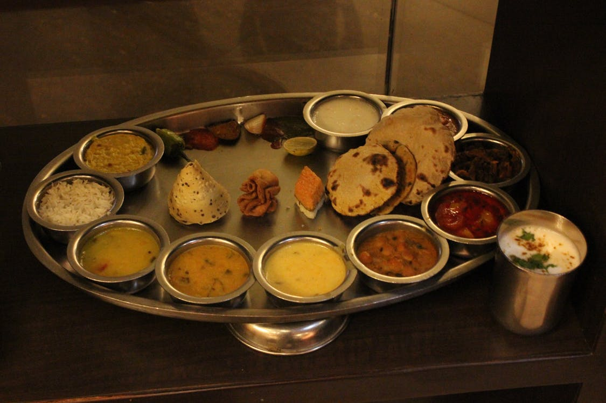

Culture of India
The Namaste:
The namaste is one of the most popular Indian customs and isn't really just restricted to the Indian territory anymore. You have Barack Obama, who has been seen doing it on various occasions, or you had Ban Ki-moon, the UN Secretary-General, greeting everyone with a namaste at the Times Square in New York on the first International Yoga Day. But, what's the significance of The Namaste, or namaskar, or namaskaara is one of the five forms of traditional greetings mentioned in the ancient Hindu scriptures, the Vedas. It literally translates to I bow to you, and greeting one another with it is a way of saying May our minds meet, indicated by the folded palms placed before the chest. The word namaha can also be translated as na ma (not mine), to signify the reductions of one's ego in the presence of the other.
Always a Festive Season:
India also sees a large number of festivals, mainly because of the prevalence of diverse religions and groups. The Muslims celebrate Eid, the Christians have Christmas, good Friday and so on, the Sikhs have Baisakhi (harvesting of crop), and the birthdays of their Gurus and the Hindus have Diwali, Holi, Makar Sakranti, the Jains have Mahavir Jayanti, the Buddhists celebrate the Buddha?s birthday on Buddha Poornima, and quite honestly, the number is endless. All of these translate to holidays in our book, of course.
Joint Families:
Also, in India, there exists the concept of a joint family, wherein the entire family (parents, wife, children and in some cases relatives) all live together. This is mostly because of the cohesive nature of the Indian society, and also reportedly helps in handling pressure and stress.
Fasting:

Fasting is an integral part of Hindu culture. Fasts or Vrats or Upvas are a way to represent your sincerity and resolve, or express your gratitude to the Gods and Goddesses. People throughout the country observe fasts during various religious occasions. Some people also observe fast on different days of a week in favour of a particular God or Goddess associated with that particular day. It is widely believed that by doing so, you are depriving your body of a basic necessity and thus, punishing yourself to cleanse off the sins that you have committed until the day of fast. The rules and regulations of a fast are in accordance with the particular occasion. The origin of fast probably comes from the Vedic ritual of kindling the sacrificial fire for sacrifice purposes. Since the word upvas has been used for denoting both fasts and kindling sacrificial fire, it can be thought that people observed fasts when they had to kindle or rekindle the domestic fires kept in their homes to perform daily sacrifices.
Holy Cow:
Cow, in the Indian culture, is considered to be a Holy animal. She is worshipped as a maternal figure and is a depiction of the bounty of Mother Earth. Lord Krishna, who grew up as cow herder is often depicted as playing his flute among cows and Gopis (milkmaids) dancing to his tunes. Interestingly, Lord Krishna is also known by the name of Govinda or Gopala, which translates to the friend and protector of cow. Hence, cows have an auspicious significance in Indian culture and religion. Even Lord Shiva's trusted vehicle is Nandi- the sacred bull. Thus, feeding a cow or making contributions for cow shelters is of immense religious importance for Indians. The Vedic scriptures, in various verses, have emphasised the need to protect and care for cows. Cows are a source of life-sustaining milk. Even the cow dung is an essential and energy efficient source of fuel, especially in rural India. Killing the cow or consuming cow meet is considered to be a sin. Hence, several states in India have banned the slaughter of cows by law. Mother cow is, however, not worshipped as other deities. Indian culture and religion appreciate and expresses its gratitude towards this innocent animal who gives back to mother Earth and its people in more than one form.
The Science Behind Temples:
Most temples are located along magnetic wave lines of the earth, which help in maximizing the available positive energy. The copper plate (called Garbhagriha or Moolasthan) buried under the main idol absorbs and resonates this energy to its surroundings. Going to the temple often helps in having a positive mind and garnering positive energies, which in turn lead to healthier functioning.
It is also a practice to take off footwear before entering places of worship because they would bring in the dirt to an otherwise cleansed and sanctified environment.
Indian Dances:
India is a land of unity in diversity, and our dances are no different. Different forms of dance(classified as folk or classical) find origin from different parts of the country, and they are a way of representation of the particular culture from which they originate. Eight classical dances, which are classified as Indian classical dances and find a mention in the Hindu Sanskrit text Natyashashtra, (a text of performing arts) are:
Bharatnatyam from Tamil Nadu
Kathakali from Kerela
Kathak from North, West and Central India
Mohiniyattam from Kerela
Kuchipudi from Andhra Pradesh
Oddisi from Odhisa
Manipuri from Manipur
Sattriya from Assam
All the dance mentioned above forms are a complete dance drama, wherein a dancer or performer narrates an entire story, almost entirely and exclusively through gestures. Such stories are mostly based on the vast Indian mythology. Classical dances in India are strictly classified as and performed according to the rules and guidelines prescribed in the Natyashastra. Just like Classical dances, folk dances in India too originate from different regions of the country. These performances are mostly based on stories which are orally passed on from one generation to the other. Folk dances mostly trace their importance to the rural areas, where performances depict the day to day life of rural inhabitants. The process for a suitable match is one long and tiring effort, which begins with matching some criteria like the horoscope, religion, caste, professional stature, physical appearance and culture. It is made sure that majority of the criteria are a match made in heaven (even if it has to be tailor-made). After all the checkboxes are ticked, the elders of the family meet for a face to face interaction. Once the talks are successful, preparations for the wedding begin in full swing.
Indian Food:

Indian food and cuisine not only form an integral part of Indian culture but are also one of the key factors of India?s popularity worldwide. The style of cooking varies from region to region, though unanimously, Indian food has a major reputation for its extensive use of spices and herbs. Just like dances, religious practices, language and clothes, you will also find a wide variety of food throughout the country. Almost every region is known for a signature dish or ingredient. The staple, however, throughout the country consists mostly of rice, wheat and Bengal gram (Chana). While vegetarian food is an integral part of Gujrati South Indian and Rajasthani cuisines, non-vegetarian dishes form a central part of Mughlai, Bengali, North Indian and Punjabi cuisine. It is also interesting to note that certain cuisines like that of Kashmir have also been influenced by foreign cooking styles from Central Asia, Persia and Afghanistan.
There exist thousands of traditions in India, and quite a few of them would leave outsiders rather curious. But the crux of Indian society and culture has always been to be well mannered, polite, respect others, and progress together.